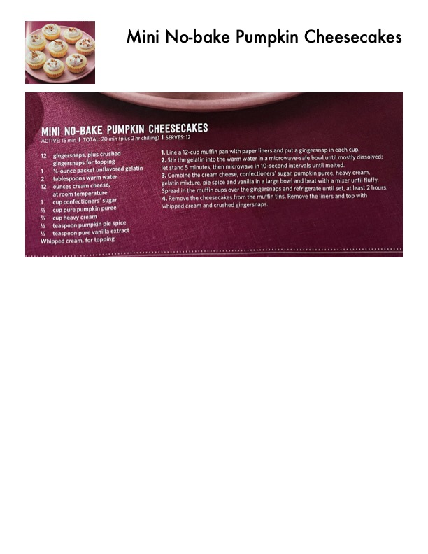

Mini No-Bake Pumpkin Cheesecakes

Original cookbook page 255
Individual pumpkin cheesecakes with gingersnap crusts, made without baking. Perfect for fall entertaining.
Prep: 15 minutes • Cook: 5 minutes • Total: 20 minutes plus 2 hours chilling
Ingredients
- 12 gingersnaps, plus crushed gingersnaps for topping
- 1 ¼-ounce packet unflavored gelatin
- 2 tablespoons warm water
- 12 ounces cream cheese, at room temperature
- 1 cup confectioners' sugar
- ⅔ cup pure pumpkin puree
- ⅓ cup heavy cream
- ½ teaspoon pumpkin pie spice
- ¼ teaspoon pure vanilla extract
- Whipped cream, for topping
Instructions
- Line a 12-cup muffin pan with paper liners and put a gingersnap in each cup.
- Stir the gelatin into the warm water in a microwave-safe bowl until mostly dissolved; let stand 5 minutes, then microwave in 10-second intervals until melted.
- Combine the cream cheese, confectioners' sugar, pumpkin puree, heavy cream, gelatin mixture, pie spice and vanilla in a large bowl and beat with a mixer until fluffy. Spread in the muffin cups over the gingersnaps and refrigerate until set, at least 2 hours.
- Remove the cheesecakes from the muffin tins. Remove the liners and top with whipped cream and crushed gingersnaps.
📝 Recipe Notes
No-bake recipe perfect for fall. Must chill for at least 2 hours to set properly. Can be made ahead.
Recipe #255 from collection